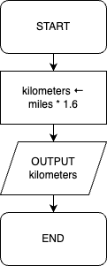

Example 1 shows an algorithm written in pseudo-code.
 Example 1
Example 1
height ← USERINPUT
width ← USERINPUT
area ← height * width
OUTPUT area
A parcel number is valid if it has exactly 8 characters.
Write an algorithm in pseudo-code to output whether or not a parcel number is valid.number ← USERINPUT
IF LEN(number) =
8 THEN
OUTPUT "Valid"
ELSE
OUTPUT
"Invalid"
ENDIF
Diagram 1 shows a flowchart of an algorithm.
 Diagram 1
Diagram 1

miles
[2, 3, 5, 7, 13, 11]?
The list is not sorted
"ford"
in the list ["Audi", "BMW", "Ford", "Mercedes", "Tesla", "Toyota",
"Volkswagen"].
Compare "Ford" to "Mercedes" (the middle item). "Ford" is smaller, so take only the left half.
Compare "Ford" to "BMW" (the new middle item). "Ford" is greater, so take only the right half.
Compare "Ford" to "Ford" (the new middle item). They are equal, so stop searching.